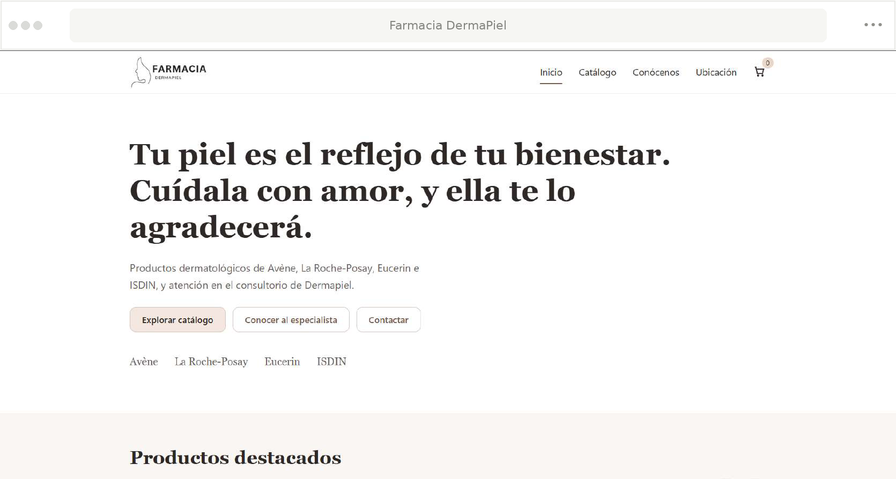

VISTA REPRESENTATIVA ↗01
Farmacia DermaPiel
E-commerceFarmacia dermatológica enfocada en productos para el cuidado de la piel de marcas como CeraVe, Eucerin, ISDIN y Vichy. Su identidad limpia transmite confianza, bienestar y atención especializada.